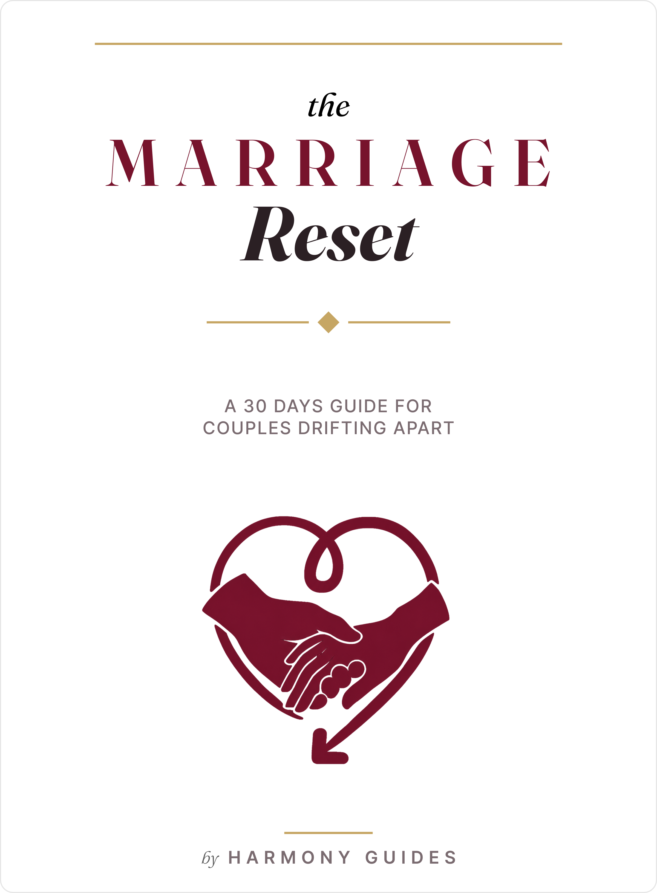

Contents
Thirty days. Four weeks. One practice at a time.
Four bonus documents ship as separate printables: the Repair Script, Recommitment Letter, 30 Nights of Prayer, and Weekly Check-In Card.
Welcome
You still love each other. The conversations got shorter. The silences got longer. You did not fall out of love. You drifted. The gap is not love lost. It is practice lost.
Most couples do not lose each other because they stopped caring. They lose each other because they stopped practicing the small things that kept them close: noticing each other, speaking honestly, following through on small promises. That is a smaller problem to solve than it feels like from inside it.
This is a structured daily reset - not a crisis intervention, and not a program for recovering from an affair. If that is what you are facing, see a licensed counselor first. This workbook is not built for that weight. If you are already in counseling, this sits alongside that work, or as a first small step before it - not instead of it.
Each day takes about ten minutes. Most weeks include two short Couple sessions; everything else is solo. If your spouse is not ready to open a workbook yet, you can still start tonight.
Faith is an invitation, never a requirement. Skip any prayer line. The practical work stands on its own.
The Marriage Reset is an educational workbook. It is not therapy, counseling, or medical advice, and it is not a substitute for professional help. Results vary from couple to couple. If you are in crisis or danger, contact local emergency services.
Week 1 - Notice. See where the distance shows up. Week 2 - Speak. Reopen the conversation, safely. Week 3 - Trust. Rebuild it in small actions. Week 4 - Reconnect. Choose each other again, out loud.
Sit down together for five minutes (or alone) with the Weekly Check-In Card:
Write the answers where you will find them again. You will compare them on Day 30. That is tonight's whole task.
Week 1 · Notice
This week is observation - where the distance shows up, and what you are quietly longing for underneath it.
If you did the Check-In Card last night, you have already started. If not, do it now - five minutes, and today counts as a win.
Naming a feeling out loud, even just on paper, changes it. "We're drifting" stops being a vague dread and starts being something you can work on, one Tuesday at a time.
Lately, our marriage has felt more like
than a partnership.
If you are starting this alone: answer both questions for yourself. Noticing is never something you can get wrong.
If it helps: a short prayer of thanks for even this small first step is a good way to close today.
Roommate distance rarely arrives all at once. It builds from a hundred small trades - a real conversation swapped for a logistics update, again and again, until logistics is most of what is left.
You cannot undo years of drift in a day, but you can start noticing the exact moment connection gets swapped for scheduling. That is the moment worth protecting next time.
Think of one conversation from this past week. Was it about connection, or was it about logistics - schedules, bills, who is picking up the kids?
If it was logistics, what might a two-minute version of that same conversation have looked like with one extra, personal sentence added?
If you are starting this alone: you are only tracking your own side of these conversations today. That is enough data to work with.
Researchers who have spent decades watching how couples actually interact found something surprisingly small mattered most: how partners respond to tiny, everyday bids for attention. A sigh. A comment about the weather. A "hey, look at this." The couples who stayed close were not the ones with no problems. They were the ones who noticed these small bids and turned toward them, again and again.
You do not need a grand romantic gesture this week. You need to catch one small bid you would otherwise miss.
Recall a moment recently when your spouse said something small - a comment, a question, a sigh - and you were distracted, tired, or elsewhere.
I think I missed a bid when
If you are starting this alone: this is about your own noticing, not your spouse's behavior. You are building the muscle, not scoring anyone.
Under almost every complaint about a marriage is a softer, more vulnerable longing that rarely gets said out loud. "You never listen" is often really "I want to feel important to you." "We never do anything" is often really "I miss feeling chosen."
You cannot ask for what you have not named, even to yourself.
Set the complaints aside for a moment. Underneath the frustration, what are you actually longing for - closeness? Being known? Feeling chosen? Partnership?
What I am really longing for is
If you are starting this alone: keep this one private for now if you need to. You will have a safe, structured way to share it in Week 2.
Every drifting marriage comes with a private narrative running underneath it - "we are just not compatible anymore," "this is just what marriage becomes," "it is too late to fix this." These stories feel like facts. Usually, they are just the loudest interpretation available at 11 p.m. on a hard day.
The story you tell yourself about your marriage shapes what you are willing to try. A slightly gentler, equally true story opens up more options than a hopeless one does.
Write the private story you have been telling yourself - one or two sentences, no editing.
Now write one alternative story that is just as true but gentler. (Example: "We are just not compatible" becomes "We used to know how to reach each other, and we can learn that again.")
If you are starting this alone: this exercise works the same either way - you are examining your own story, not predicting your spouse's.
Today is about doing something with everything you have noticed this week - one small, concrete turn toward each other.
You do not need a resolved conversation to start turning toward each other again. You need one small, repeatable moment of attention.
The bid I will watch for
Our signal
If you are going through this alone: choose your own bid to watch for in your spouse this week, without announcing it. You are practicing the noticing either way - sharing the agreement is a bonus, not a requirement.
One week of noticing is behind you. Today is for taking stock - gently, without turning it into a performance review.
Naming what you noticed, out loud, to each other, is itself a small act of reconnection - often the first real one in a while.
One thing I noticed
One thing I was longing for
If you are going through this alone: write both answers for yourself, and consider sharing just one of them with your spouse this week, low-pressure, whenever it feels natural.
If it helps: close the week with a short prayer of thanks for what you were willing to see, even in its early, unfinished shape.
End of Week 1. Next: Week 2 - Speak, where noticing turns into a safe way to reopen the harder conversations.
Week 2 · Speak
What you are missing is not motivation. It is the actual words for the moment things get tense.
Most couples do not stop talking because they ran out of things to say. They stop because talking started to feel risky - like it might turn into a fight, or into silence that is somehow worse than a fight.
Under stress, most people default to one of two patterns - pushing to resolve things right now, or going quiet until it blows over. Neither is wrong. Both make sense as protection. Naming your own pattern is the first step to choosing something else when it counts.
Under stress, do you tend to push to talk it out immediately, or go quiet and pull back? Neither answer is a character flaw - just notice which is yours.
What does your spouse tend to do? (If you are not sure, that is useful information too.)
If you are going through this alone: you can only be sure of your own pattern today, and that is exactly enough to work with this week.
Every couple argues. What separates the ones who stay close from the ones who drift apart is not the absence of conflict - it is what happens in the middle of it. A repair attempt is any small thing, said or done, that puts the brakes on before things spiral: a joke, an apology, a hand on the arm, a simple "can we slow down."
You have probably already made repair attempts without having a name for them. Recognizing them makes you more likely to use them on purpose.
Think of a recent disagreement. Was there a moment either of you tried to de-escalate - a joke, an apology, a pause? What happened when they did?
If no repair attempt was made, what might one have sounded like?
If you are going through this alone: you are building awareness you will use starting tomorrow, whether or not your spouse is doing this exercise alongside you.
Most complaints are a smaller, sharper version of a bigger, softer feeling. "You're always on your phone" is often really "I feel invisible when we are in the same room." The complaint gets said. The feeling underneath rarely does.
The sharp version tends to start a fight. The soft version tends to start a real conversation.
Write down one complaint you have had recently - the sharp, surface version, exactly as it would come out in the moment.
Now rewrite it, naming the softer feeling underneath:
When
happens, I feel
If you are going through this alone: keep both versions somewhere you can find them. Tomorrow's tool is where you will learn when and how to actually say the second one.
You do not need to be naturally good at hard conversations. You need six lines, ready before you need them - the same way you would keep a fire extinguisher somewhere you can reach it without thinking.
Say the line out loud, exactly as written. The formality is the point. A scripted line signals "I am trying to de-escalate" more clearly than an improvised one.
Every one of these six lines works even if your spouse has never seen this book. Today's reflection: which line is hardest to imagine saying out loud? That is usually the one worth practicing first.
The line I will practice first
A script only works if it is already familiar the first time you need it under pressure. Today is for trying one line on purpose, in a low-stakes moment, so it is not brand new the first time it actually matters.
The friction we chose
The line we used
What we noticed
If you are going through this alone: practice saying one line out loud to yourself, or use it for real the next time a small friction comes up - even without announcing that you are "doing an exercise." The line works the same either way.
Somewhere in every drifting marriage is at least one honest thing that has not been said - not because it is shameful, but because saying it feels like it might change something, and change feels risky when you are already unsteady.
The things left unsaid do not disappear. They just sit underneath everything else, quietly making every other conversation a little more guarded.
Is there something you have been holding back - not a confession, just an honest thought or feeling you have not voiced? Name it for yourself, even if you are not ready to say it aloud yet.
What is the actual fear underneath not saying it? Being misunderstood? Starting a fight? Being seen as needy or difficult?
If you are going through this alone: you do not have to share this today, or even this month. Naming it privately is real progress on its own, and the script will be here whenever you are ready to use it.
If it helps: a short prayer for courage to be honest - not for the perfect words, just the willingness - is a quiet way to close today.
A week of learning to speak differently is behind you. Today is for taking stock of what is actually working, not grading yourselves on how well you have "done" it.
Lines we want to keep
Something that felt different this week
If you are going through this alone: choose your own one or two lines to keep carrying forward, and consider using one of them for real this week, even without narrating the exercise behind it.
End of Week 2. Next: Week 3 - Trust, where honest conversations turn into small, repeatable actions that make safety feel real again.
Week 3 · Trust
Trust comes back the same way it left - in small moments, repeated until they are reflexive.
If you ask most long-married couples what keeps them close, they rarely point to a grand vacation or a big speech. They point to small things they do without fail - a particular greeting, a nightly check-in, a habit so ordinary it barely looks like effort from the outside.
You are not looking for a dramatic fix this week. You are looking for one small, protected moment you can actually keep.
Did you and your spouse used to have a small ritual - a greeting, a routine, a habit - that has quietly disappeared? What was it?
What made it easy to keep, back when you kept it?
If you are going through this alone: you can start a ritual on your own side this week - greeting your spouse a certain way, asking a particular question - without needing their buy-in first. Small, one-sided consistency is still real trust-building.
If it helps: a short prayer of thanks for the ordinary, unremarkable moments of a marriage is a good way to close today.
You will get a full menu on Day 19. Today is just for narrowing your thinking, so you are not choosing on the spot later.
A ritual only works if it is small enough to actually keep. Ambitious plans get abandoned by week two. Tiny ones survive.
Of these three starting points, which feels most doable for you this week, not someday?
What has gotten in the way of a habit like this sticking before?
If you are going through this alone: choose a ritual you can start on your own end regardless of participation - a warmer greeting, a genuine question - and let it be a gift with no immediate return expected.
Trust is not really about big declarations. It is built - or worn down - in small promises: "I'll call you at lunch," "I'll take care of it," "I won't forget." Kept or missed, these add up faster than almost anything else in a marriage.
You do not need to fix every broken promise from the past. You need to start noticing the small ones you are keeping and missing right now.
Think of one small promise - yours or your spouse's - that was kept this week. How did it land, even if it seemed minor?
Think of one that was missed. Try to notice this without building a case against anyone - just observe it.
If you are going through this alone: focus today on the promises you are keeping. That is the half of this you have full control over.
Think of trust like a shared account. Every small positive moment - a kind word, a kept promise, a moment of real attention - is a deposit. Every dismissal or broken promise is a withdrawal. Neither one is dramatic on its own. The balance is what matters over time.
You do not need one huge deposit to feel safer together. You need more small deposits than withdrawals, most weeks.
What is one small deposit you made into your marriage this week - something easy to overlook, but real?
What is one small deposit your spouse made, that you might not have acknowledged out loud?
If you are going through this alone: notice your own deposits this week without needing them matched right away. Consistency, not immediate reciprocity, is what rebuilds trust.
If it helps: name one thing you are grateful your spouse has deposited into this marriage over the years, even during the drift - and consider telling them, plainly, sometime this week.
Pick one. Not all of these - one. Keep it for at least a week before you consider adding another. Small and kept beats ambitious and abandoned, every time.
The one I will try first, and why
If you are going through this alone: several of these work as one-sided gifts - the spoken appreciation, the kept-promise note, a genuine welcome-home moment. Start there. Tell your spouse which one, if you are doing this together - or simply start it quietly this week.
You picked a ritual yesterday. Today is for actually doing it - not planning it, not discussing it further, just doing it once, on purpose.
The ritual we did
How it felt
If you are going through this alone: do your chosen ritual on your own side today, without announcing it as an exercise. Notice how it felt to you, and whether it changed anything about the moment, even slightly.
A week of small, repeated actions is behind you. Today's task is simple: notice what is actually sticking, and decide - plainly - to keep it going.
What is sticking
The smaller version, if we need one
If you are going through this alone: decide, plainly, whether to keep your chosen ritual going into next week regardless of any visible change from your spouse. Consistency on your end is still the work.
If it helps: close the week with a short prayer of thanks for whatever small trust has started to return - even something too small to mention out loud yet.
End of Week 3. Next: Week 4 - Reconnect, ending with the Day 30 Recommitment Ceremony.
Week 4 · Reconnect
Name what is actually different. Then choose, out loud, to keep going.
Three Check-In Cards are behind you, filled out honestly, in the middle of ordinary weeks. Today is for reading them side by side.
Change over 21 days is almost always smaller and quieter than you would want it to be - and easy to miss unless you actually go back and look.
Read your Day 1, Day 7, Day 14, and Day 21 Check-In Cards in order. What is one real shift, even a small one?
What has not changed yet - and is that okay for now?
If you are going through this alone: your own answers are the whole comparison today. Change on one side of a marriage still counts as real change.
Here is something worth saying plainly: this workbook does not end with a fixed marriage. It ends with a marriage that has better tools than it had 30 days ago. Those are different things, and only one of them is realistic.
Expecting a finished, permanent fix sets you up to feel like a failure the first time an old pattern resurfaces. Expecting ongoing practice sets you up to keep going when that happens.
What is one old pattern you expect might resurface sometime after Day 30?
What is one tool from these 30 days you would reach for, specifically, when it does?
If you are going through this alone: the same both/and applies to solo effort. You are not expecting to single-handedly fix a marriage in a month - you are building tools you will keep using regardless of pace.
You will exchange something like this on Day 30. Today is just for starting the draft, honestly, with no pressure to get it right the first time. Use Bonus 2 - the Recommitment Letter Template - if you want more room.
Writing something down, in your own words, forces a kind of honesty that talking often lets you avoid.
What I have noticed about "us" over these 30 days
One thing I appreciate in my spouse that I do not say often enough
What I am choosing, starting today
If you are going through this alone: write this letter anyway. Keep it for whenever your spouse is ready to read it - or simply for yourself, as a record of what you were willing to choose, even alone.
Thirty days of practical tools tends to leave a mark beyond the marriage itself - most people come out the other side a little more patient, a little more honest, a little better at loving someone imperfectly. Today's reflection stands on its own, faith or no faith.
Noticing how this process has shaped you, not just the marriage, is worth naming before the month ends.
Where have you seen this marriage shape you - not just make you happy, but make you more patient, more honest, more able to love someone imperfectly?
If it is part of your life: a short, simple prayer for the next season - not for a perfect marriage, just for the willingness to keep choosing each other. If it is not your season for that, the question above is the whole day, and that is enough.
If you are going through this alone: both the reflection and the prayer work solo exactly as they do together.
The days are getting shorter on purpose. You are close to Day 30 - these four are quick, one line each, meant to be answered in a minute or two rather than worked through slowly.
If you are going through this alone: every one of these four questions is yours alone to answer, regardless of where your spouse is in the process.
This is not legally binding, and it does not need an officiant - just the two of you, ten quiet minutes, and the letters you started on Day 24. Find a moment without distraction. This does not need to be elaborate. It needs to be real.
In the next season, I choose to notice
In the next season, I choose to speak ________, even when it's hard.
In the next season, I choose to protect our ritual of
I choose you again - not because these thirty days fixed everything, but because I want to keep choosing you.
Optional faith blessing: a short prayer of thanks for the last 30 days, and a request for continued grace - in your own words. Optional gesture: exchange the letters, light a candle, or hold hands in silence for one full minute.
If you are going through this alone: speak your own commitments aloud, even to an empty room, and keep the letter for when your spouse is ready. A ceremony of one is still a real, spoken choice.
The reset ends here. The habit doesn't. Choose one thing - the Check-In Card, one script line, one ritual - and keep doing that one thing into month two. Write it down. That is the last task of these 30 days, and maybe the most important one.
The one thing I will keep